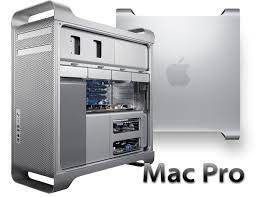

The Mac Pro is a series of workstations and servers for professionals designed, manufactured, and sold by Apple Inc. since 2006. The Mac Pro, in most configurations and in terms of speed and performance, is the most-powerful computer that Apple offers. It is one of four desktop computers in the current Macintosh lineup, sitting above the consumer Mac Mini and iMac, and alongside the all-in-one iMac Pro.
Introduced in August 2006, the first-generation Mac Pro had two Dual-core Xeon Woodcrest processors and a rectangular tower case carried over from the Power Mac G5. It was replaced on April 4, 2007, by a dual Quad-core Xeon Clovertown model, then on January 8, 2008, by a dual Quad-core Xeon Harpertown model. Revisions in 2010 and 2012 revisions had Nehalem/Westmere architecture Intel Xeon processors.
In December 2013, Apple released the second-generation Mac Pro with a new cylindrical design. The company said it offered twice the overall performance of the first generation while taking up less than one-eighth the volume. It had up to a 12-core Xeon E5 processor, dual AMD FirePro D series GPUs, PCIe-based flash storage, and an HDMI port. Thunderbolt 2 ports brought updated wireless communication and support for six Thunderbolt displays. Reviews initially were generally positive, with caveats. Limitations of the cylindrical design prevented Apple from upgrading the second-generation Mac Pro with more powerful hardware.
In December 2019, the third-generation Mac Pro returned to a tower form factor reminiscent of the first-generation model, but with larger air cooling holes. It has up to a 28-core Xeon-W processor, eight PCIe slots, AMD Radeon Pro Vega GPUs, and replaces most data ports with USB-C and Thunderbolt 3.
Apple said that an Intel-based replacement for the 2003's PowerPC-based Power Mac G5 machines had been expected for some time before the Mac Pro was formally announced on August 7, 2006, at the annual Apple Worldwide Developers Conference (WWDC). In June 2005, Apple released the Developer Transition Kit, a prototype Intel Pentium 4-based Mac housed in a Power Mac G5 case, that was temporarily available to developers. The iMac, Mac Mini, MacBook, and MacBook Pro had moved to an Intel-based architecture starting in January 2006, leaving the Power Mac G5 as the only machine in the Mac lineup still based on the PowerPC processor architecture Apple had used since 1994. Apple had dropped the term "Power" from the other machines in their lineup and started using "Pro" on their higher-end laptop offerings. As such, the name "Mac Pro" was widely used before the machine was announced.[5] The Mac Pro is in the Unix workstation market.[6] Although the high-end technical market has not traditionally been an area of strength for Apple, the company has been positioning itself as a leader in non-linear digital editing for high-definition video, which demands storage and memory far in excess of a general desktop machine. Additionally, the codecs used in these applications are generally processor intensive and highly threadable, which Apple's ProRes white paper describes as scaling almost linearly with additional processor cores. Apple's previous machine aimed at this market, the Power Mac G5, has up to two dual-core processors (marketed as "Quad-Core"), but lacks the storage expansion capabilities of the newer design.
Original marketing materials for the Mac Pro generally referred to the middle-of-the-line model with 2 × dual-core 2.66 GHz processors. Previously, Apple featured the base model with the words "starting at" or "from" when describing the pricing, but the online US Apple Store listed the "Mac Pro at $2499", the price for the mid-range model. The system could be configured at US$2299, much more comparable with the former base-model dual-core G5 at US$1999, although offering considerably more processing power. Post revision, the default configurations for the Mac Pro includes one quad-core Xeon 3500 at 2.66 GHz or two quad-core Xeon 5500s at 2.26 GHz each. Like its predecessor, the Power Mac G5, the pre-2013 Mac Pro was Apple's only desktop with standard expansion slots for graphics adapters and other expansion cards
.Apple received criticism after an incremental upgrade to the Mac Pro line following the 2012 WWDC. The line received more default memory and increased processor speed but still used Intel's older Westmere-EP processors instead of the newer E5 series. The line also lacked then-current technologies like SATA III, USB 3, and Thunderbolt, the last of which had been added to every other Macintosh at that point. An email from Apple CEO Tim Cook promised a more significant update to the line in 2013. Apple stopped shipping the first-generation Mac Pro in Europe on March 1, 2013 after an amendment to a safety regulation left the professional Mac non-compliant. The last day to order was February 18, 2013. The first-generation Mac Pro was removed from Apple's online store following the unveiling of the redesigned second-generation Mac Pro at a media event on October 22, 2013.
All Mac Pro systems were available with one or two central processing units (CPU) with options giving two, four, six, eight, or twelve cores. As an example, the eight core standard configuration Mac Pro 2010 uses two Quad core Intel E5620 Xeon CPUs at 2.4 GHz, but could be configured with two Hexa Core Intel Xeon X5670 CPUs at 2.93 GHz. The 2006-2008 models use the LGA 771 socket, while the Early 2009 and later use the LGA 1366 socket, meaning either can be removed and replaced with compatible 64-bit Intel Xeon CPUs. A 64-bit EFI firmware was not introduced until the MacPro3,1, earlier models can only operate as 32-bit despite having 64-bit Xeon processors, however this only applies to the EFI side of the System, as the Mac boots everything else in BIOS Compatibility mode, and operating systems can take advantage of full 64 bit support. The newer LGA 1366 sockets utilize Intel's QuickPath Interconnect (QPI) integrated into the CPU in lieu of an independent system bus; this means the "bus" frequency is relative to the CPU chipset, and upgrading a CPU is not bottlenecked by the computer's existing architecture.
The original Mac Pro's main memory uses 667 MHz DDR2 ECC FB-DIMMs; the early 2008 model uses 800 MHz ECC DDR2 FB-DIMMS, the 2009 and onward Mac Pro use 1066 MHz DDR3 ECC DIMMs for the standard models, and 1333 MHz DDR3 ECC DIMMs for systems configured with 2.66 GHz or faster CPUs. In the original and 2008 models, these modules are installed in pairs, one each on two riser cards. The cards have 4 DIMM slots each, allowing a total of 32 GB (1 GB = 10243 B) of memory (8 × 4 GB) to be installed. Notably, due to its FB-DIMM architecture, installing more RAM in the Mac Pro will improve its memory bandwidth, but may also increase its memory latency. With a simple installation of a single FB-DIMM, the peak bandwidth is 8000 MB/s (1 MB = 10002 B), but this can increase to 16000 MB/s by installing two FB-DIMMs, one on each of the two buses, which is the default configuration from Apple. While electrically the FB-DIMMs are standard, for pre-2009 Mac Pro models Apple specifies larger-than-normal heatsinks on the memory modules. Problems have been reported by users who have used third party RAM with normal size FB-DIMM heatsinks. (see notes below). 2009 and later Mac Pro computers do not require memory modules with heatsinks.
The Mac Pro had room for four internal 3.5" SATA-300 hard drives in four internal "bays". The hard drives were mounted on individual trays (also known as "sleds") by captive screws. A set of four drive trays was supplied with each machine. Adding hard drives to the system did not require cables to be attached as the drive was connected to the system simply by being inserted into the corresponding drive slot. A case lock on the back of the system locked the disks trays into their positions. The Mac Pro also supported Serial ATA solid-state drives (SSD) in the 4 hard drive bays via an SSD-to-hard drive sled adapter (mid-2010 models and later), and by third-party solutions for earlier models (e.g., by an adapter/bracket which plugged into an unused PCIe slot). Various 2.5-inch SSD drive capacities and configurations were available as options. The Mac Pro was also available with an optional hardware RAID card. With the addition of a SAS controller card or SAS RAID controller card, SAS drives could be directly connected to the system's SATA ports. Two optical drive bays were provided, each with a corresponding SATA port and an Ultra ATA/100 port. The Mac Pro had one PATA port and could support two PATA devices in the optical drive bays. It had a total of six SATA ports – four were connected to the system's drive bays, and two were not connected. The extra SATA ports could be put into service through the use of after-market extender cables to connect internal optical drives, or to provide eSATA ports with the use of an eSATA bulkhead connector. However, the two extra SATA ports were unsupported and disabled under Boot Camp.
The 2008 model had two PCI Express (PCIe) 2.0 expansion slots and two PCI Express 1.1 slots, providing them with up to 300 W of power in total. The first slot was double wide and intended to hold the main video card, arranged with an empty area the width of a normal card beside it to leave room for the large coolers modern cards often use. In most machines, one slot would be blocked by the cooler. Instead of the tiny screws typically used to fasten the cards to the case, in the Mac Pro a single "bar" held the cards in place, which is itself held in place by two "captive" thumbscrews that can be loosened by hand without tools and will not fall out of the case.
On the original Mac Pro introduced in August 2006, the PCIe slots can be configured individually to give more bandwidth to devices that require it, with a total of 40 "lanes", or 13 GB/s total throughput. When running Mac OS X, the Mac Pro did not support SLI or ATI CrossFire,[20] limiting its ability to use the latest "high-end gaming" video card products; however, individuals have reported success with both CrossFire and SLI installations when running Windows XP, as SLI and CrossFire compatibility is largely a function of software.
The bandwidth allocation of the PCIe slots can be configured via the Expansion Slot Utility included with Mac OS X only on the August 2006 Mac Pro. The Early-2008 and later Mac Pros had PCIe slots hardwired as in the accompanying table.
For external connectivity, the Mac Pro included five USB 2.0 ports, two FireWire 400 and two FireWire 800 (Late 2006 until Early 2008), respectively four FireWire 800 (Early 2009 until Mid 2012) ports. Networking was supported with two built-in Gigabit Ethernet ports. 802.11 a/b/g/n Wi-Fi support (AirPort Extreme) required an optional module in the Mid 2006, Early 2008 and Early 2009 models, whereas in the 2010 model and later Wi-Fi was standard. Bluetooth also required an optional module in the Mid 2006 model, but was standard in the Early 2008 and newer models. Displays were supported by one or (optionally) more PCIe graphics cards. More recent cards featured two Mini DisplayPort connectors and one dual-link Digital Visual Interface (DVI) port, with various configurations of on-card graphics memory available. Digital (TOSlink optical) audio and analog 3.5 mm stereo mini jacks for sound in and out were included, the latter becoming available on both the front and back of the case. Unlike other Mac computers, the Mac Pro did not include an infrared receiver (required to use the Apple Remote). In Mac OS X Leopard, Front Row could be accessed on the Mac Pro (and other Macs) using the Command (⌘)-Escape keystroke.
From 2006 through 2012, the exterior of the Mac Pro's aluminum case was very similar to that of the Power Mac G5, with the exception of an additional optical drive bay, a new arrangement of I/O ports on both the front and the back, and one less exhaust vent on the back. The case could be opened by operating a single lever on the back, which unlocked one of the two sides of the machine, as well as the drive bays. All of the expansion slots for memory, PCIe cards and drives could be accessed with the side panel removed and no tools were required for installation.[21] The Mac Pro's Xeon processors generated much less heat than the previous dual-core G5s, so the size of the internal cooling devices were reduced significantly. This allowed the interior to be re-arranged, leaving more room at the top of the case and doubling the number of internal drive bays. This also allowed the elimination of the large clear plastic air deflector used as part of the cooling system in the Power Mac G5. Less heat also meant less air to move out of the case for cooling during normal operations; the Mac Pro was very quiet in normal operation, quieter than the much noisier Power Mac G5 and proved difficult to measure using common sound pressure level meters. The handle on and cooling air intake configuration of the front of the case has caused Macintosh enthusiasts to refer to the first generation as the "cheese grater" Mac Pro.
The Mac Pro comes with EFI 1.1, a successor to Apple's use of Open Firmware and the wider industry's use of BIOS.
Apple's Boot Camp provides BIOS backwards compatibility, allowing dual and triple boot configurations. These operating systems are installable on Intel x86-based Apple computers:
•Mac OS X 10.4.7 and later
•Microsoft Windows XP, Vista, and Windows 7 32-bit & 64-bit (hardware drivers are included in Boot Camp)
•Other x86 operating systems such as Linux x86, Solaris, and BSD
This is made possible by the presence of an x86 Intel architecture as provided by the CPU and the BIOS emulation which Apple has provided on top of EFI. Installing any additional operating system other than Windows is not supported directly by Apple. Though Apple's Boot Camp drivers are only for Windows, it is often possible to achieve full or nearly full compatibility with another OS by using third-party drivers.